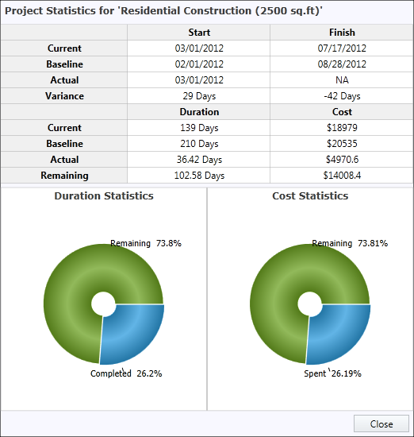

Project statistics will provide the current statistics of the project in an object form. It will have all the basic information about the project and will provide the variance between the initial plan and current progress.
This will provide enough information about the project. The entire project information will be available in the form of an object of type “ProjectInfo”. You can set your own visual to display the statistics.
Use Case Scenario
This will be useful for Project Leads to take decisions based on the current status. An Organization can use this to present the current statuses of their projects to their clients. They can also use this for analysis before making important decisions on projects.
Methods
|
Method |
Description |
Parameters |
Type |
Return Type |
|
GetProjectStatistics
|
This method is used to get the current statistics information about the project |
GetProjectStatistics() |
N/A |
ProjectInfo |
Adding Project Statistics to an Application
To add Project Statistics to an application:
1. Initialize new instance of ‘ProjectInfo’ class.
2. Assign the GetProjectStatistics() Methods’ return value to that instance.
3. Use the instance for further process.
The following codes illustrate this:
|
[XAML]
<gantt:GanttControl Grid.Row="1" x:Name="Gantt" ItemsSource="{Binding GanttItemSource}" ToolTipTemplate="{StaticResource toolTipTemplate}"> <gantt:GanttControl.TaskAttributeMapping> <gantt:TaskAttributeMapping TaskIdMapping="Id" TaskNameMapping="Name" DurationMapping="Duration" StartDateMapping="StDate" FinishDateMapping="EndDate" ChildMapping="ChildTask" ProgressMapping="Complete" PredecessorMapping="Predecessor" ResourceInfoMapping="Resource" CostMapping="Cost" BaselineCostMapping="BaselineCost" BaselineFinishMapping="BaselineEnd" BaselineStartMapping="BaselineStart" > </gantt:TaskAttributeMapping> </gantt:GanttControl.TaskAttributeMapping> </gantt:GanttControl>
|
|
[C#]
// To get the Project Statistics ProjectInfo projInfo = this.Gantt.GetProjectStatistics(); (or)
ProjectInfo projInfo = new ProjectInfo(); projInfo = this.Gantt.GetProjectStatistics();
|
Sample Project Statistic Visual:
 |
Figure 26: Project Statistics
Samples
To view samples:
1. Select Start -> Programs -> Syncfusion -> Essential Studio x.x.xx -> Dashboard.
2. Click Run Samples for WPF under User Interface Edition panel.
3. Select Gantt.
4. Expand the Baseline Support item in the Sample Browser.
5. Choose the Project Statistics sample to launch.